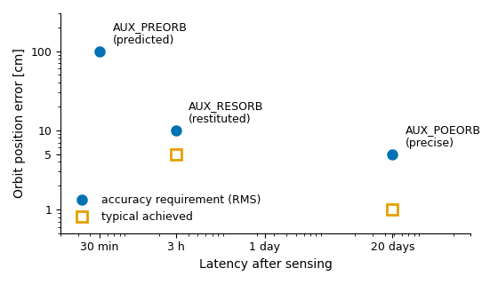
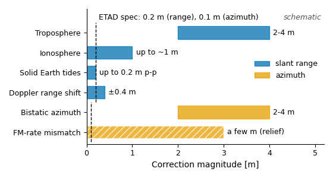

| SAR Concepts: Orbits and Timing Corrections | |
A SAR pixel is located by two times: the range time of the echo and the azimuth time of the zero-Doppler point. Both are turned into a ground position with the orbit. Orbit errors and uncorrected timing errors therefore move pixels on the ground and, in InSAR, leave phase ramps in the interferogram. Orbit files, the Sentinel-1 Extended Timing Annotation Dataset (ETAD) and the Elevation Antenna Pattern (EAP) phase correction remove the main sources of these errors.
An orbit is delivered as state vectors: the satellite position and velocity in an Earth-fixed frame at regular times, interpolated to the time of each image line. The vectors annotated in a Level-1 product are produced soon after acquisition, and more accurate solutions come later. For Sentinel-1 the Copernicus POD service provides three levels (Figure 1):
| Sentinel-1 product | Latency | Accuracy requirement | Typical |
|---|---|---|---|
Predicted, AUX_PREORB | 30 min | 1 m (2D RMS) | - |
Restituted, AUX_RESORB | 3 h | 10 cm (2D RMS) | < 5 cm |
Precise, AUX_POEORB | 20 days | 5 cm (3D RMS) | < 1 cm |
Since April 2025 there is also a shorter-latency AUX_MOEORB (3D RMS < 5 cm).

Figure 1. Sentinel-1 orbit products (ESA POD product requirements). Filled: accuracy requirement (2D RMS for PREORB and RESORB, 3D RMS for POEORB); open: typical achieved accuracy.
Geolocation. An orbit error moves the image by about the same distance on the ground: along-track errors in azimuth, radial and cross-track errors in range. At centimetre level this is far below a Sentinel-1 IW pixel (about 2.3 m slant range by 14 m azimuth).
InSAR. The flat-Earth phase is computed from the baseline between the two orbits. An error δB⊥ in the perpendicular baseline leaves residual fringes across the swath:
δφ ≈ (4π/λ) · δB⊥ · Δθ
where λ is the wavelength and Δθ the span of look angles. Across the full Sentinel-1 IW swath (Δθ ≈ 12.7° = 0.22 rad, λ = 5.55 cm), each centimetre of baseline error gives about 0.08 fringe. With precise orbits this is negligible. Restituted orbits can leave a ramp of a few tenths of a fringe. Along-track error appears as an azimuth misregistration, which ESD removes in the TOPS chain (see TOPS).
Even with a perfect orbit, the annotated times assume a vacuum, a static Earth and an idealised processor. The Sentinel-1 Extended Timing Annotation Dataset (ETAD), produced by ESA and DLR, gives gridded range and azimuth time corrections for every burst (Figure 2):

Figure 2. Schematic order of magnitude of each ETAD correction, from the ranges quoted by Gisinger et al. (2022). Bars from zero mean 'up to'; the hatched FM-rate bar is indicative only (local, at burst edges in mountainous terrain). Dashed line: ETAD accuracy specification (1σ), 0.2 m in range; the azimuth specification is 0.1 m.
The sum layers also include instrument timing calibration constants. For the phase, the range terms become a phase screen:
φETAD = −2π f0 (τtropo + τtides − τiono + τcal)
with f0 the radar frequency and τ the two-way delays in seconds. The screen itself is hundreds of radians. In an interferogram only its change between dates remains: the large-scale tropospheric, ionospheric and tidal difference.
When to apply. Use ETAD for absolute geolocation (corner reflectors, offset tracking, multi-sensor work), for wide-area or high-relief InSAR, and in the GSLC chain. The processor terms (bistatic, Doppler, FM rate) are nearly the same for two passes on one track and largely cancel in an interferogram. The atmospheric and tidal terms change between dates and do not cancel.
ESD and GSLC. In the classical TOPS chain ESD still sets the final azimuth alignment. The 0.1 m azimuth specification of ETAD is about 0.007 pixel, coarser than the 0.001 pixel that TOPS needs. In the GSLC chain each image is geocoded on its own, so nothing absorbs timing errors pair by pair. There ETAD geometry and phase are applied to the pixels of every acquisition before geocoding.
The Sentinel-1 processor (IPF) compensates the elevation antenna pattern (EAP). Before IPF 2.43 (March 2015) it compensated only the gain; from 2.43 it also removes the pattern phase. An interferogram between a pre-2.43 product and a newer one therefore contains a range-varying phase offset. The fix is to apply the missing phase compensation to the older product.
orbitType defaults to Sentinel Precise (Auto Download). The
other choices are Sentinel Restituted, DORIS POR/VOR (ENVISAT), DELFT (ENVISAT, ERS), PRARE (ERS), Kompsat5 and
Biomass Precise. For Sentinel-1 it searches the local auxdata folder, then downloads from
step.esa.int/auxdata/orbits/Sentinel-1/. If the requested type is missing it tries the other
Sentinel type and logs a warning. It writes state vectors every 1 s from 10 s before to 10 s after the scene,
interpolated with a polynomial of degree polyDegree (default 3), and names the file in
orbit_state_vector_file. continueOnFail keeps the annotated orbit if no file is
found. The Biomass Precise option currently has no effect: BIOMASS products pass through unchanged.
AUX_PREORB and AUX_MOEORB are not used.etadPhaseCorrection, etadHeight and
etadGradient (per-burst tie-point grids for IW, bands for SM). Back-Geocoding carries these into the stack, and Interferogram
subtracts the phase only if both images have them. With both switches on (IW only, the GSLC set-up) the phase
is removed from the pixels, without the Doppler range term. The flags etad_phase_applied and
etad_azimuth_applied let GSLC Terrain Correction skip its own bistatic model, and let
Interferogram stop on a GSLC stack that mixes corrected and uncorrected dates.troposphericCorrectionRg) for one or all IW
sub-swaths.AUX_CAL file (auto-downloaded) and sets the
EAP Correction flag.See also TOPS, SAR geometry and Atmosphere.
Workflows: Geocode-First InSAR (GSLC).